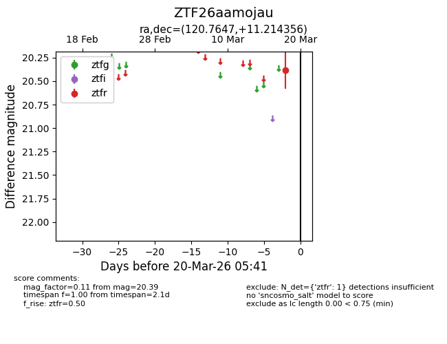
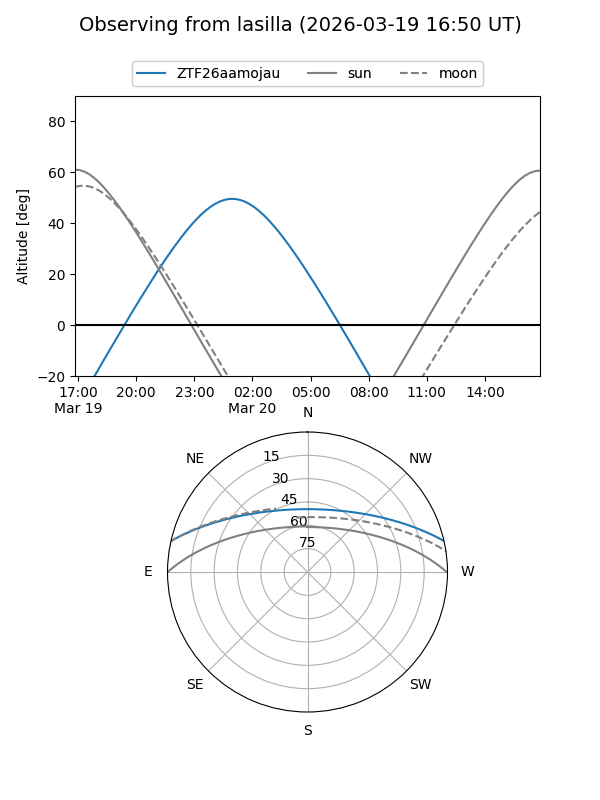
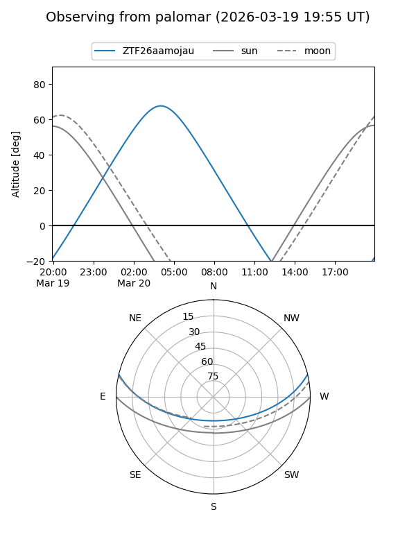

ZTF26aamojau
Target ZTF26aamojau at 2026-03-20 05:43
Aliases and brokers:
FINK: link
Lasair: link
ALeRCE: link
alt names
ZTF26aamojau (ztf,fink_ztf)
Coordinates:
equatorial (ra, dec) = 120.7647,+11.21436
equatorial (HMS+DMS) = 08:03:03.53,+11:12:51.68
galactic (l, b) = (210.7494,+20.92075)
Flags:
Photometry:
last ztfr=20.39
1 ztfr detections
Lightcurve

Visibility


Additional plots